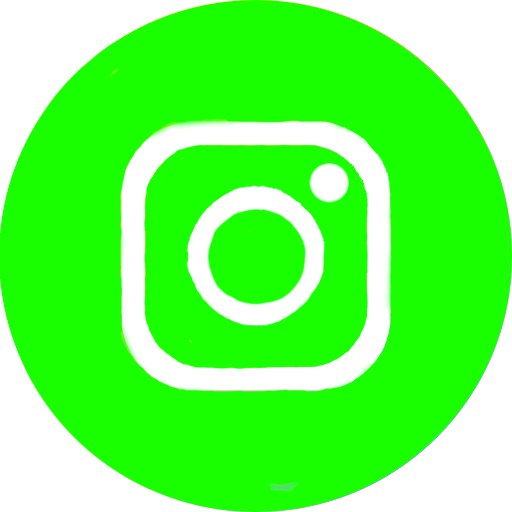
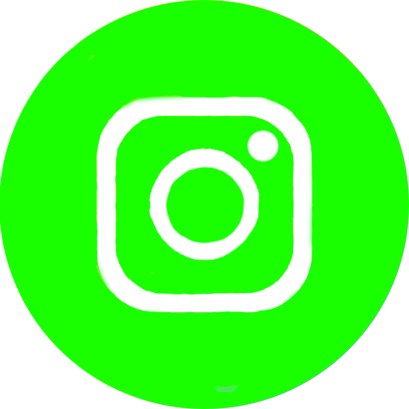

I didn't know what to add to the main page, so I'll tell you a little about myself. I love creating websites because it's a good way to express myself. I learned to be a layout designer in the 9th grade. I participated in one competition, which, although it was organized haphazardly, still gave me invaluable experience. Unfortunately, that competition did not bring me victory. But it's not always important. I loved experimenting with different elements, trying to do something, erased the tutorials and continued to improve myself in this direction. And in 2020, the YouTube channel "Mobile YT" appeared. You can visit it by clicking on the YouTube icon below, or from the navigation menu at the top of the site. Much of what is told on this channel, I did not know before. But to make a video, I had to find out. One day at a computer science lesson at a new school, we were going through HTML and I wanted to show my abilities. And after a while I wanted to make my own website to help novice YouTubers, to promote my YouTube and other social networks a little, and to have a universal computer science homework assignment. That's how the idea for this site was born. I hope you liked it!
 
